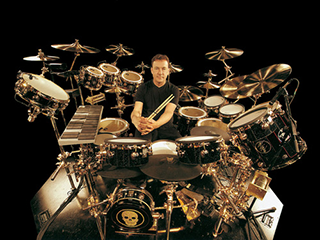

Neil Peart (born September 12, 1952 in St. Catharines, Ontario) is the main lyricist and drummer for the progressive rock band Rush. Neil Peart has received many awards for his recorded performances, and is known for his technical proficiency and stamina.
Peart's drumming skill and technique is well-regarded by fans, fellow musicians, and magazines. His influences are eclectic, ranging from Jon Thomas, John Bonham, Michael Giles, Ginger Baker, Phil Collins, Steve Gadd and Keith Moon, to fusion and jazz drummers Billy Cobham, Buddy Rich, Bill Bruford and Gene Krupa. The Who was the first group that inspired him to write songs and play the drums.
Peart had long played matched grip, but shifted to traditional as part of his style reinvention in the mid-1990s under the tutelage of jazz coach Freddie Gruber. Shortly after the filming of his first instructional DVD A Work in Progress, Peart went back to using primarily matched, though he does switch to traditional when playing songs from Test for Echo and during moments when he feels traditional grip is more appropriate, such as the rudimentary snare drum section of his drum solo. He discusses the details of these switches in the DVD Anatomy of a Drum Solo.
In concert, Peart uses an elaborate 360-degree drum kit, with a large acoustic set in front and electronic drums to the rear.
Peart is also the main lyricist for Rush. Literature has always heavily influenced his writings, and, as such, has tackled a wide range of subjects. In his early days with Rush, much of his lyrical output was influenced by fantasy, science fiction, mythology and philosophy. However, nearly as much would deal with real world or personal issues such as life on the road and parts of his adolescence.
Opinions of Peart's lyrics have always been divided. While fans have lauded them as thoughtful and intelligent, some critics have called them over-wrought and bombastic. In 2007, he was voted No.2 on Blender magazine's list of "worst lyricists in rock". However, Allmusic has called Peart "one of rock's most accomplished lyricists."